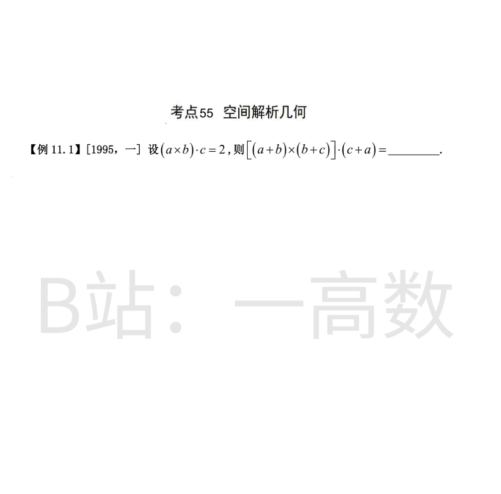

展开叉积（b×b=0）：
$$(a+b)\times(b+c)=a\times b+a\times c+b\times c$$
与 c+a 作数量积，凡含重复向量的混合积为零（(a×b)·a=(a×c)·c=(a×c)·a=(b×c)·c=0），只剩
$$[(a+b)\times(b+c)]\cdot(c+a)=(a\times b)\cdot c+(b\times c)\cdot a$$
由混合积的轮换不变性 (b×c)·a=(a×b)·c=2：
$$(a\times b)\cdot c+(b\times c)\cdot a=2+2=4$$
备注：工作单将本组标注为考点54（伯努利方程与欧拉方程，例10.1），但图片实际内容为「考点55 空间解析几何【例11.1】[1995,一]」，已按图片实际题目解答。